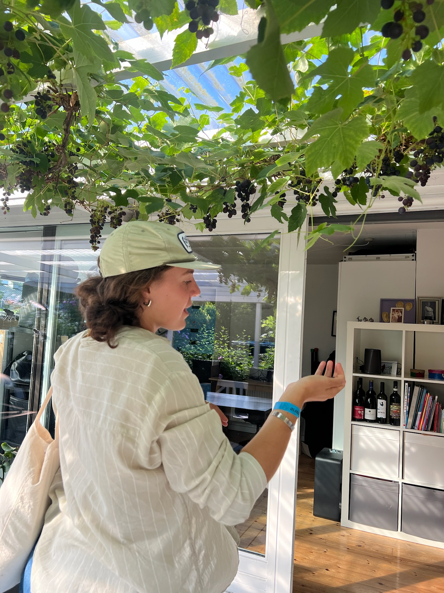
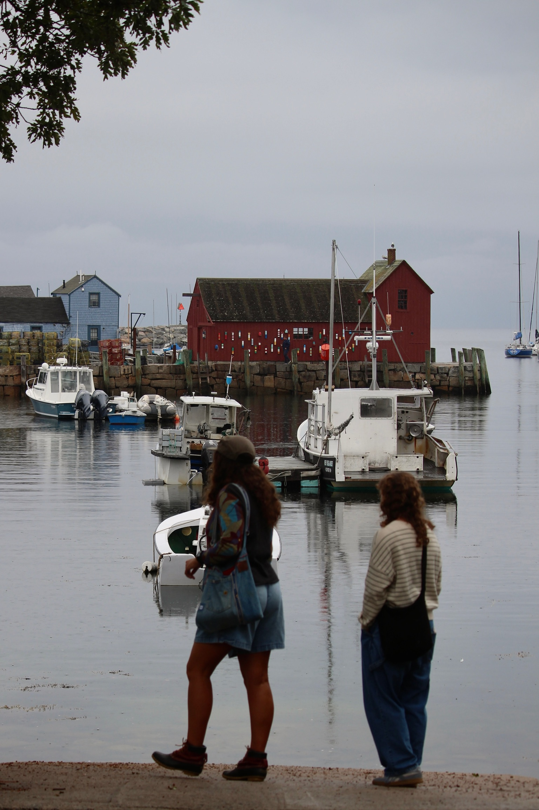
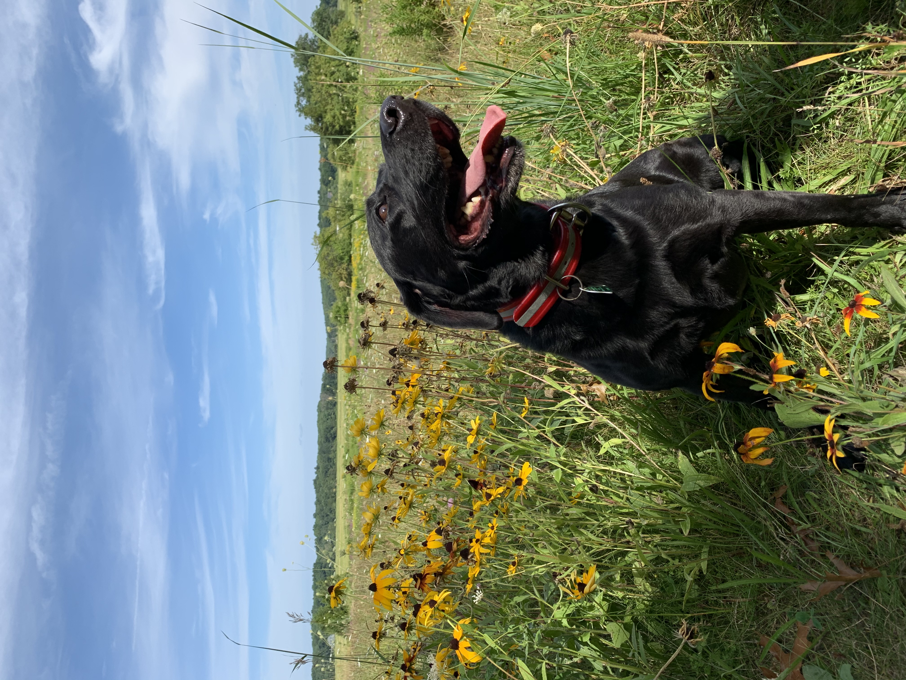
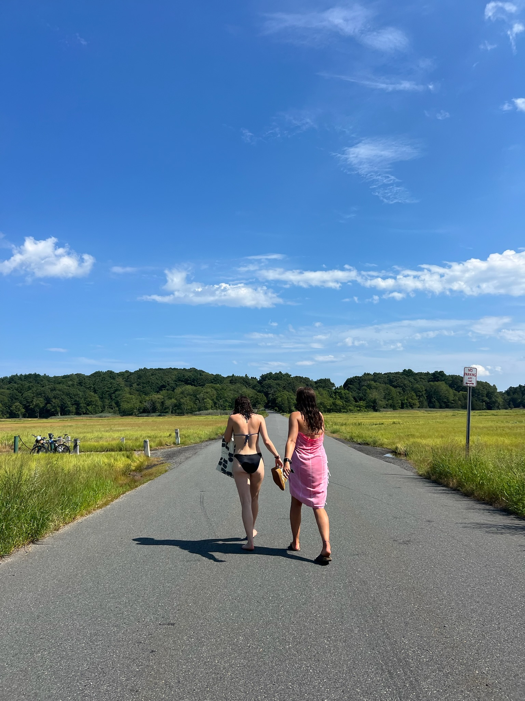
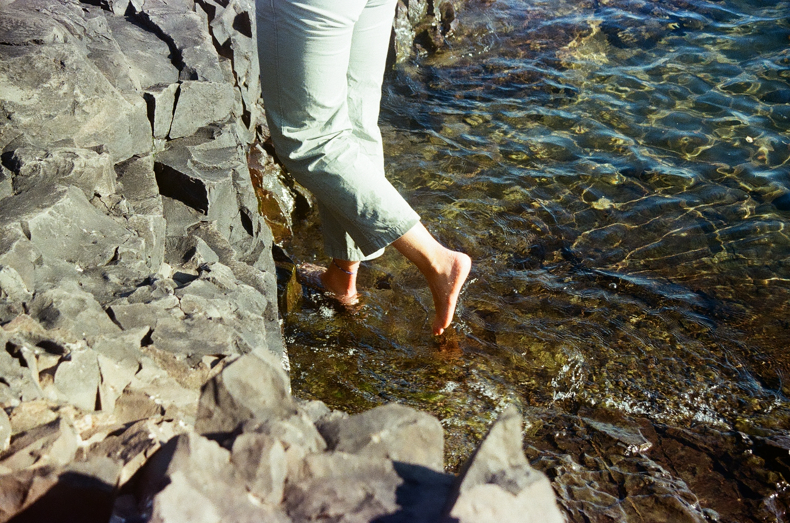

Hi! My name is Ella and I am 23 years old, currently living in my childhood bedroom after graduating college in Minnesota and moving back to the small town I call home in Northern Massachusetts working a remote job that is less than scintillating. To keep myself from going insane (or perhaps just embracing the insanity), I am diving into my hobbies, old and new, and trying to do everything I've always said I don't have time for. If you are interested in running, baking, crafting, hiking, travel, poems about radishes, reading or anything that Laura Ingalls Wilder did in her books (I may have sewn my own dress and brought my chicken's eggs to school to be her for halloween in 4th grade) perhaps this is the place for you!
I created this website largely for myself, to challenge myself to appreciate the little things and embrace the fact that I am not amazing at anything, but I am not afraid to try anything and I am pretty ok at many of them! (Also because as a Computer Science major, I became OBSESSED with the early internet blogs and I decided I shouldn't complain about blogging being gone, without at least making one.) My knitting projects have never turned out perfectly, my sourdough is often delicious, but strange-looking, and my journey as a runner and athlete has been rocky to say the least. Yet, I am still doing it all! And I think that is what is missing from the internet, people who are willing to try most anything and do ok! Because for me, being ok at a lot of things is honestly better than being amazing at one (not that I don't wish I was a banjo prodigy).





What actually happened out there.
Read This Post →Simple, fast, and no substitutions required.
Read This Post →Eight months, three tears, one wearable result.
Read This Post →A short reflection on doing less, better.
Read This Post →Where to eat, where to walk, and where to skip.
Read This Post →